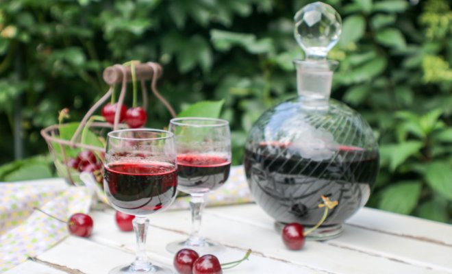
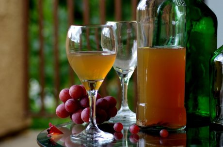
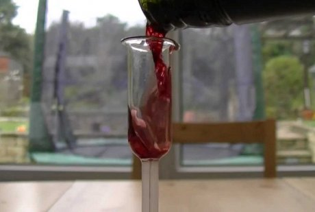

Начинающие виноделы часто испытывают трудности с определением крепости изготовленного ими алкогольного напитка. Одни оценивают ее по скорости наступления опьянения, другие пытаются измерять ее ареометром, который подходит лишь для раствора вода-спирт.
И даже на этикетках известных производителей вина указываются приблизительные данные, например, содержание алкоголя 10-11% или 15-18%. То же самое относится и к сахару. Ведь процесс формирования вина не прекращается после завершения брожения. И, как известно, со временем напиток даже может превратиться в уксус.
На качество будущего вина влияет много факторов. И конкретное содержание сахара и спирта в сусле в конечном итоге приведет к получению вина определенного типа: сухого, полусухого, полусладкого, крепленого или столового.
Что влияет на качество и крепость вина

Казалось бы, все сделали по технологии, а вино получилось слабым и кислым. Причина может быть в недостатке сахара. Поэтому важно следить за его содержанием на протяжении всего процесса брожения.
У каждого сорта винограда свое содержание сахара, и, в зависимости от его уровня, определяется качество урожая и дальнейшее его использование.
Кроме сорта, на сахаристость ягод влияют тип почвы (ее минеральный состав, кислотность, плотность, влажность), географическое положение (климат, количество осадков, высота над уровнем моря), солнечная активность, уровень агротехники и близость водоемов.
В средней полосе виноград редко достигает своей энологической зрелости, т.е. полного созревания мякоти, кожицы и семян. Повысить уровень сахара можно путем частичной усушки ягод: гроздь на ветке осторожно перекручивают, перекрывая поступление влаги от корней, или же снятые грозди подвяливают на сквозняке чердака несколько дней.
Не менее важно для будущего вина и качество дрожжей. Нередко случается, что природные дрожжи (грибки, обитающие на винограде), начав ферментацию, перестают работать из-за более "агрессивных" вредных штаммов. Такое вино получается недобродившим. Поэтому в сусло добавляют диоксид серы, чтобы прекратить размножение ненужных штаммов (на полезные грибки это вещество не влияет).
Опытные же виноделы советуют использовать винные дрожжи, которые перерабатывают сахар в спирт полностью и до нужной крепости.
Если хотите делать вино по всем правилам, то вам не обойтись без специальных приборов ареометров. Есть несколько их видов: спиртомер, сахаромер, гидрометр и виномер. Они используются для определения удельной плотности жидкости, количества спирта и сахара.
Знание этих параметров помогает регулировать рецептуру, влиять на процесс брожения и получить вино определенного типа и крепости.
Почему виномеры не работают

Обычный спиртометр, который определяет содержание спирта в напитке, для вина не подходит, т.к. он работает правильно только в водно-спиртовом растворе. В алкогольном же напитке из винограда огромное количество различных примесей.
Для вина есть другие метрологические приборы – виномеры-сахаромеры. Зачастую у них две шкалы: содержания сахара и спирта. Однако с этими приспособлениями тоже не все просто. Точно крепость напитка такой прибор может определить только в сухом виноградном вине.
С другими алкогольными напитками, тем более домашнего приготовления, у него возникают сложности: показатели могут разниться. Примеси сахара, сока, кислот и сивушных масел изменяют плотность раствора, приводя к неточным замерам.
Чтобы получить более-менее правильные показатели, вино нужно наливать медленно и аккуратно, чтобы оно не пенилось, а также следует постараться не нагревать прибор теплом своих рук. Да и сама температура напитка влияет на точность измерения, чем она выше или ниже, тем погрешность будет больше.
Большинство приборов для определения крепости напитков откалиброваны для работы в растворе с температурой 20°C (допускается отклонение в ту или иную сторону не более 0,5°C).
Для измерения используют и более сложные приборы: цифровой ареометр и рефрактометр (оптический ареометр). Для анализа рефрактометром каплю жидкости помещают на стеклянную призму и с помощью окуляра определяют показания. Достаточно точно эти приборы показывают и количество сахара в напитке.
Впрочем, виномеры с двойной шкалой (спирта и сахара) также определяют сахаристость более точно. По ней можно высчитать и крепость напитка.
Как по сахару рассчитать и регулировать крепость вина
Крепость вина находится в прямой зависимости от первоначального содержания сахара. Чем оно выше, тем крепче и слаще будет этот алкогольный напиток.
В сухом вине сахар отсутствует, т.к. во время брожения он полностью превращается в спирт. Поэтому в основном крепость такого напитка варьируется с 9 до 14%. Полусухие (7-12% спирта) и полусладкие (14-16% спирта) вина получаются путем остановки брожения холодом. В них остается около 8% сахара. Такие вина долго храниться не могут, поэтому нуждаются в пастеризации.
У крепких и крепленых вин процесс брожения останавливается в начале путем добавления спирта в сусло, поэтому они отличаются крепостью и сладким вкусом.
Еще на стадии получения сусла можно регулировать крепость и тип будущего вина. Для этого нужно измерить общий сахар и решить, нужно его добавлять или нет. В средней полосе сахаристость сусла составляет в среднем 18-19%, что в конечном итоге дает 10-10,5% крепости. Для сухого вина этого недостаточно. Поэтому нужно решить, сколько сахара добавить, чтобы получить ожидаемый продукт.
Известно, что 1% сахара в сусле дает в среднем 0,6% спирта. Чтобы получить сухое вино, нужно добиться содержания сахара в сусле не менее 24%, т.е. добавить в него недостающие 4-5%. Для получения полусухого, полусладкого или сладкого виноградного алкогольного напитка сахара потребуется еще больше. Точное его количество можно определить по таблице расчета крепости выброженного вина.
|
Удельный вес |
Кол-во сахара (в %) |
Крепость выброженного |
Удельный вес |
Кол-во сахара (в %) |
Крепость выброженного |
|
1,072 1,073 1,074 1,075 1,076 1,077 1,078 1,079 1,080 1,081 1,082 1,083 1,084 1,085 1,086 1,087 1,088 1,089 1,090 1,091 |
16,2 16,4 16,7 17,0 17,2 17,5 17,8 18,0 18,3 18,6 18,8 19,1 19,4 19,6 19,9 20,2 20,4 20,7 21,0 21,2 |
9,5 9,6 9,8 10,0 10,1 10,3 10,5 10,6 10,8 10,9 11,0 11,2 11,4 11,5 11,7 11,9 12,0 12,2 12,3 12,5 |
1,092 1,093 1,094 1,095 1,096 1,097 1,098 1,099 1,100 1,101 1,102 1,103 1,104 1,105 1,106 1,107 1,108 1,109 1,110 1,111 |
21,5 21,8 22,0 22,3 22,6 22,8 23,1 23,4 23,6 23,9 24,2 24,4 24,7 25,0 25,2 25,5 25,8 26,0 26,3 26,6 |
12,6 12,8 12,9 13,1 13,3 13,4 13,6 13,8 13,9 14,1 14,3 14,4 14,6 14,7 14,9 15,0 15,2 15,3 15,5 15,7 |
Измерить крепость полученного напитка можно по шкале сахаристости. Нужно знать ее показатели на еще не бродившем сусле и после завершения процесса брожения.
Предположим, первый показатель у вас был 30 г/л, а второй – 6 г/л. Следовательно, каждый литр вина выбродил 24 г сахара. Так как из 1 кг сахара получается приблизительно 470 мл алкоголя, то высчитываем крепость напитка: 24×0,47=11,28%.
Спиртометр же можно применить для измерения крепости вина, если перегнать небольшую часть напитка в самогон. Опустите прибор в полученный дистиллят и узнаете результат. Если при перегонке из 1 л вина вы получили 200 мл 50%-ного спирта, что соответствует 100 мл чистого спирта, то крепость вашего вина будет равняться 10%.
Время выдержки вина влияет на его вкус и консистенцию, а не на крепость. Так что повысить градус таким способом не удастся.
Впрочем, так ли важен дополнительный градус в вашем вине или гораздо важнее его букет и сам процесс создания благородного "дара богов".